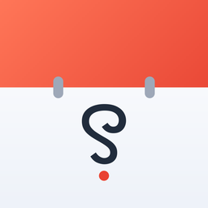

Kanglalabs
Software. Mobile. Future.
Manipuri-first apps for Android and iPhone, built in Imphal.
Apps

Kumsing
The Manipuri Calendar
The lunar calendar, the tithi, every festival from 2024 to 2030 — offline, and in Meetei Mayek, Bengali or Latin. Free.
More Manipuri apps are in build.